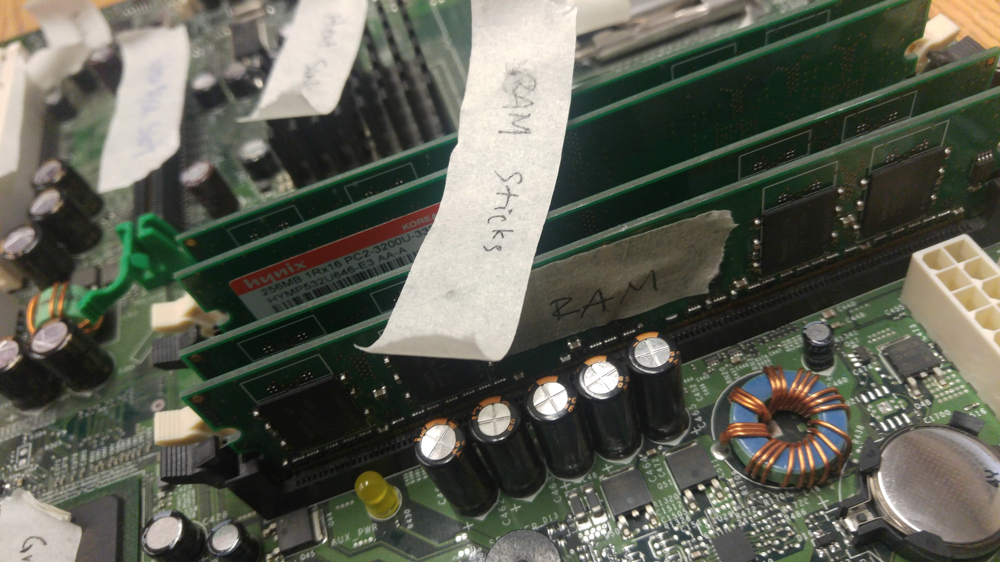
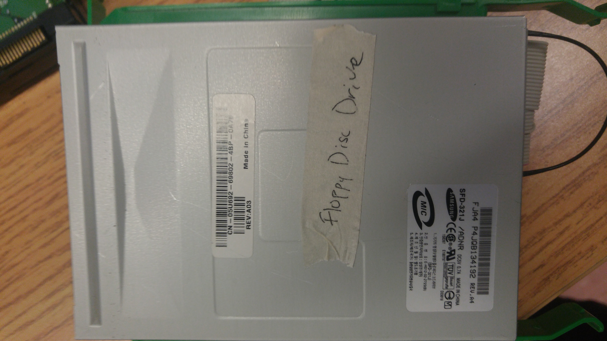
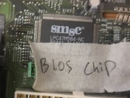

Introduction
Welcome! This website is based off of an old Dell computer as we took it apart and labeled the parts. It explains the parts of a desktop computer with pictures of each of the individual part. There is a paragraph briefly explaining how a computer works together with all its components. Before and after pictures are also included, proving that we successfully took it apart and put it back together to how it was before. Finally, you can visit our APA cited references and the link to the validation of our website. Thank you for visiting and we hope you have a nice day!
What is a Computer?
A computer is an electronic machine that processes information—in other words, an information processor: it takes in raw information (or data) at one end, stores it until it's ready to work on it, chews and crunches it for a bit, then spits out the results at the other end. All these processes have a name. Taking in information is called input, storing information is better known as memory (or storage), chewing information is also known as processing, and spitting out results is called output.
- Input: Your keyboard and mouse, for example, are just input units—ways of getting information into your computer that it can process. If you use a microphone and voice recognition software, that's another form of input.
- Memory/storage: Your computer probably stores all your documents and files on a hard-drive: a huge magnetic memory. But smaller, computer-based devices like digital cameras and cellphones use other kinds of storage such as flash memory cards.
- Processing: Your computer's processor (sometimes known as the central processing unit) is a microchip buried deep inside. It works amazingly hard and gets incredibly hot in the process. That's why your computer has a little fan blowing away—to stop its brain from overheating!
- Output: Your computer probably has an LCD screen capable of displaying high-resolution (very detailed) graphics, and probably also stereo loudspeakers. You may have an inkjet printer on your desk too to make a more permanent form of output.
Motherboard
The motherboard serves to connect all of the parts of a computer together. The CPU, memory, hard drives, and other ports and expansion cards all connect to the motherboard directly or via cables. The motherboard is the piece of computer hardware that can be thought of as the "backbone" of the PC, or more appropriately as the "mother" that holds all the pieces together. Phones, tablets and other small devices have motherboards too but they're often called logic boards instead. Their components are usually soldered directly onto the board to save space, which means there aren't expansion slots for upgrades like you see in desktop computers. Popular motherboard manufacturers include ASUS, AOpen, Intel, ABIT, MSI, Gigabyte, and Biostar.

Central Processing Unit
The CPU is the part of the computer that responsible for interpreting and executing most of the commands from the computer’s other hardware and software. Because it needs to process all this information, it is very hot and requires some sort of cooling to keep it running smoothly. This could be an extra fan and heatsink or some sort of liquid cooling for more advanced and powerful CPUs. Many different devices have use a CPU, including mobile devices, desktops, laptops, tablets, and much more. The two most common CPU manufacturers in computers are AMD and Intel, while in smartphones it is Qualcomm, Nvidia, and Apple. This small and square-shaped disk is located in the motherboard of the computer, and is inserted into a socket pin-side-down and is secured by a small lever, as you can see above. The speed and power of your CPU depends on its clock speed and the number of cores. The clock speed of a processor is the number of instructions it can process in any given second, measured in Gigahertz (GHz). So, the higher the clock speed the more instructions it can process and the faster it will be in use. A core of a CPU is what manages a “task” that the computer does. A task can be anything from opening a browser to editing a Word document. Nowadays, computer are either dual-core (has two cores) or quad-core (having four cores), and some high-end processors can have 8 or more cores. This technique is used commonly by AMD, as most of their computers have many cores to maximize performance. However, adding more is not the only way to add more power to your computer. “Hyperthreading” is a newer technology used by Intel which basically virtualizes two cores for every one core that’s available. The CPU pretends it has more cores than it does, and it uses its own logic to speed up program execution. So, a dual-core hyperthreaded processor will act as a quad-core processor and will perform better. To note, having additional cores is better than having hyperthreaded virtual ones.
Power Supply
A power supply is a hardware component that supplies power to an electrical device. It receives power from an electrical outlet and converts the current from AC (alternating current) to DC (direct current), which is what the computer requires. It also regulates the voltage to an adequate amount, which allows the computer to run smoothly without overheating. The power supply an integral part of any computer and must function correctly for the rest of the components to work. You can locate the power supply on a system unit by simply finding the input where the power cord is plugged in. Without opening your computer, this is typically the only part of the power supply you will see. If you were to remove the power supply, it would look like a metal box with a fan inside and some cables attached to it. Of course, you should never have to remove the power supply, so it's best to leave it in the case. Since the power supply is the first place an electronic device receives electricity, it is also the most vulnerable to power surges and spikes. Therefore, power supplies are designed to handle fluctuations in electrical current and still provide a regulated or consistent power output. Some include fuses that will blow if the surge is too great, protecting the rest of the equipment. After all, it is much cheaper to replace a power supply than an entire computer. Still, it is wise to connect all electronics to a surge protector or UPS to keep them from being damaged by electrical surges.
Hard Drive
The hard drive, which includes the hard disk, stores all the files and folders, and all other data. This data is stored on stacks of disks inside a solid case, which are constantly spinning. This enables quick access to all files, anywhere on the drive. To ensure that data remains on the drive, the data is stored magnetically. Most hard drives are only the size of a palm, but have large storage capabilities, some reaching 100GB. Hard drive is also short for hard disk drive, while hard disk points to the disks located inside this drive. They are synonymous, and they all mean where the data is stored.

Random Access Memory
RAM (Random Access Memory) is a type of storage system--volatile--inside the computer. It stores data for a short period of time, either losing the data when the computer is shut down or transferring the data into the hard drive if it is saved (for example, a Word document). More RAM allows computers to handle increasing amounts of data, and boosts system performance. RAM is there to load data in a quick and efficient way, instead of getting data from the hard drive. It also provides quick reading and writing access to various storage devices. Typically, RAM comes in sticks, or modules, which are ruler-length and lined with gold plated connectors on the bottom, along with notches for correct installation. These RAM sticks are all located in slots on the motherboard. Some popular manufacturers of RAM include Kingston, PNY, Crucial Technology, and Corsair.
Floppy Disk Drive
Floppy disk drives, now no longer used, were formerly forms of portable storage. They have now replaced by flash drives and portable media devices, although some computers still can read floppy disk drives. They originally weighed somewhere around several decks of cards, and their external USB versions are barely larger. Floppy drives had a slot for disk insertion, and buttons to eject it. The sides had holes to place the drive into the computer. Inside the system unit, the drive is mounted so the connections are pointing inwards and the disk slot faces outwards. The back end would have a cable port, connecting it to the motherboard. External floppy drives typically have a USB type A connector, or whatever else is needed to link it to the computer.
CD-ROM Drive
CD-ROM (Compact Disc Read Only Memory) is a read-only disc with data like software or audio. The CD-ROM drive is used to read it. Drives have varying speeds at which they read discs, from 1x to 72x. They can be used to play audio from a CD and reading its data.

Graphics/Video Card
Video cards, or graphics cards, are used to ease the load from the CPU and free it to do other processes. They help run programs efficiently, and also accelerate rendering speed for 2D and 3D graphics. They help improve everything from 3D video games to web browsers, and are crucial to programs which have a large reliance on a video card. They come pre-installed in the PCI or AGP slots, and can be upgraded. The majority of video cards use OpenGL and DirectX libraries, which have commands to alter graphics for programming purposes. These commands vary from object rotation to creating light and shadows or changing shapes. This helps in the process of creating programs which are reliant on graphics.
Sound Card
Sound cards, which come in many forms, allow the computer to have audio input and output. Some of these also allow audio input and output digitally. Certain sound cards which have analog output must have a DAC (digital to analog converter), and others with analog input must have an ACD (analog to digital converter). They do exactly what their name means: the former converts an outgoing digital signal into analog, and the latter, vice versa, converting an analog input into digital. . Sound cards can also be part of the motherboard in certain computers, while others have slots for these cards. Additional audio capacity can be reached with a new sound card, which has higher sampling rates and more input and output. They can also include connectors (¼ in)which allow instrument output. Other options for obtaining more audio capacities might include using a breakout box, which has a built-in sound card and connectors for many audio channels. These boxes are outside the computers, and can support much more than a lone sound card. Most will connect to a Firewire or a USB port, though some are linked to a sound card. For the most part, however, sound cards have one input and one output connection. Their connectors are standard to most headphones only(3.5 mm)
Network Card
The network card, an expansion card, allows computers to connect to networks, like home networks or the Internet (with the help of a router). These are generally built into the motherboard in newer computers. This card only enables communication between computers using network switches or if two computers are directly connected, and cannot directly link up to the Internet. Accessing the Internet needs routers, as mentioned before. The network card is also called an Ethernet card or a network adapter.
Heat Sink
A computer's CPU may perform millions of calculations every second. As the processor continues to work at a rapid pace, it begins to generate heat. If this heat is not kept in check, the processor could overheat and eventually destroy itself. Fortunately, CPUs include a heat sink, which dissipates the heat from the processor, preventing it from overheating. The heat sink is made out of metal, such as a zinc or copper alloy, and is attached to the processor with a thermal material that draws the heat from away the processor towards the heat sink. Heat sinks can range in size from barely covering the processor to several times the size of the processor if the CPU requires it. Most heat sinks also have "fins," which are thin slices of metal that are connected to the base of the heat sink. These additional pieces of metal further dissipate the heat by spreading it over a much larger area. A fan is often used to cool the air surrounding the heat sink, which prevents the heat sink from getting too hot. This configuration is referred to as a heatsink and fan or HSF combination. While heat sinks are used in nearly all computer CPUs, they have become commonplace in video card processors, or GPUs, as well.
BIOS Chip
The basic input/output system, or BIOS, is on a chip in the motherboard, and it has a critical role. When a computer is turned on, the BIOS must be run, as it is responsible for loading the operating system. It uses non-volatile memory, and ensures that the computer functions properly. A damaged BIOS chip means that a computer will likely not start up. Damaged chips can be repaired, but only through complicated means. The BIOS chip is usually placed by its manufacturer, and the type of BIOS chip will normally be indicated.
Expansion Slots
Expansion slots are openings in a computer where new capabilities can be added, such as memory, support for special devices, and graphics capabilities. They come in two general sizes, half (or 8-bit size) and full size (or 16-bit slots), and are found in most personal computers except portables. The boards which give computers their additional capabilities have been given many names, being referred to as add-ins, add-ons, cards, and expansion boards/cards. Modern PCs also have PCI slots for these boards, which are directly connected to the PCI bus.
CPU Fan
The CPU fan is one of the major parts in the CPU, attached directly above the processor. Together, with the heat sink fan, it cools the CPU and directs the hot air out of the computer, away from the motherboard and other internal hardware, ensuring that the computer functions well. They also prevent overheating by bringing in cooler air. This process of constant cooling is essential to ventilate the computer-generated heat, which could otherwise damage other components. CPU fans are the most cost-effective and efficient in cooling down the processor. They are sold in varying sizes, often along with an aluminum or copper heat sink fan.
Computer Ports
Ports are an essential feature of all computing devices, as they provide the input and output interfaces the device needs to communicate with peripherals. The most important of ports on computers, however, are used for computer networking. They can also be physical or virtual. Physical ports connect computer via cable to routers, modems, flash drives, and other such peripherals. Due to the fact that that there is a variety of peripherals connected to computers, ports come in different types. They include:
- Ethernet ports - square-shaped connection points for Ethernet cables.
- USB ports - rectangular-shaped connection points for USB cables.
- Serial ports - round-shared connection points for serial cables.
Before and After
These two pictures are evidence that we took apart our computer and put it back together properly. As you can see below, the first picture was taken at the start of our tear-down as we just opened the case of the computer. The second picture was taken once we were completely done and just about to close the lid.

Before
After